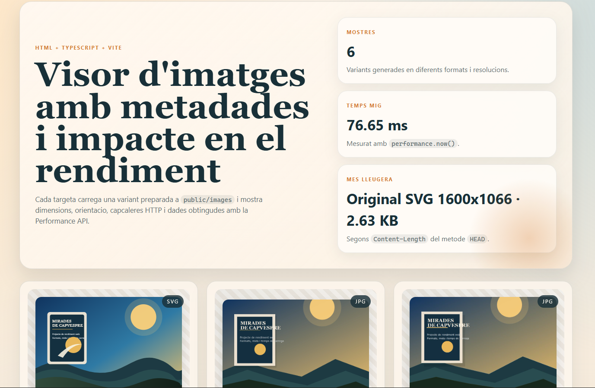

Pr1 Visor d'imatges i rendiment
Practica de M09 UF2 centrada en visor de imagenes, metadatos y analisis basico de rendimiento.
Abrir practica
Practica de M09 UF2 centrada en visor de imagenes, metadatos y analisis basico de rendimiento.
Abrir practica